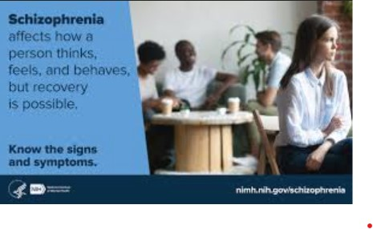

Our Programs
Book an online session with one of our therapists

Our therapists can refer you to one of our board-certified doctors to prescribe medication for mental health management. Book an appointment with one of our physicians or get a referral from your therapist and start to feel better today.
EGIDE specializes in online group therapy
online counseling services accommodate your busy schedule. Now, you can focus on your mental wellness whenever and wherever it’s convenient for you. Connect with us on your phone .
Online Couples Sessions
Online couples therapy works similarly to traditional in-person therapy sessions except that they take place online via phone or video call. This allows couples to take advantage of the convenience and comfort of discussing their relationship from
the safety of their own home
Specialized Therapists For Teenagers
our teen counselors are licensed therapists who specialize in providing mental health services to adolescents and often younger children, as well
Prioritizing mental health during adolescence is crucial. By the age of 17, over half of all significant
mental health issues manifest, and by the age of 18, three-quarters do as well. A person's quality of life will improve as time passes if therapy is started as soon as a condition is identified. EGIDE provides a-weekly plan of one-hour online
sessions with 30% off only for teenagers. egide also provides call sessions and live chat sessions in whats app. Feel stronger when faced with challenges From the convenience of your device, you may find a qualified therapist in your state and
receive continuing assistance through encrypted chat and live video sessions.

For detailed payment and timing information, please contact us!